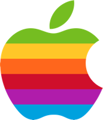
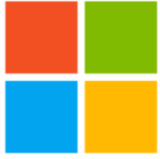
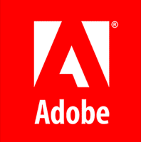
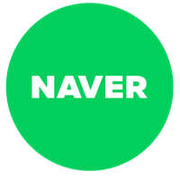
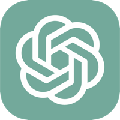
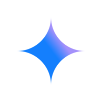
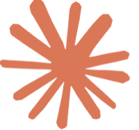

오늘 실습에 쓸 프롬프트와 데이터
멀티 페르소나 토론
6개월 뒤 코스피 방향을 여러 관점으로 토론하고 교차 검증함
에이전트 채용
실습 2 채팅에 이어 시야와 차원을 넓히는 질문을 던짐

PA | AI CONNECT 2026: 데이터로 여는 HR의 다음 단계
HR이 설계하는 에이전트 리더십
AI 활용 5단계로 진단하고 키우는 우리 조직의 에이전트 리더
강정구, 라이너 AI 전략 총괄
워크샵 카톡 오픈채팅방
입장코드
1106
① 카메라로 QR 스캔② 입장코드 1106 입력
AI가 새로운 기술 패러다임으로 자리잡고 있음







*IBM이 1981년 최초의 개인용 컴퓨터 IBM PC(모델 5150) 출시; **WWW 대중 공개 1993년; ***아이폰 2007년 6월 출시; ****ChatGPT(GPT-3.5) 2022년 11월 출시
글로벌·테크 경험 기반, K-AI 업계 최전선에서 혁신을 추진하고 있음
강정구, 라이너 AI 전략 총괄
Freechal
Kearney
Korea
Bain &
Company
LINE
Thailand
NAVER
kakao
Entertainment
kakao
Liner
AI Agents
서울대 경제학부
미국 미시간 대학 MBA
국민경제자문회의
AI경제 정책자문단 위원
AI 트렌드를 아는 것과 AI를 잘 쓰는 것은 별개의 문제입니다. AI를 잘 쓰는 것과 AX를 추진하는 것에는 다른 관점이 필요합니다. AX를 추진하는 것과 AX를 정착시키는 것은 또 다른 과제입니다.
1년 만에 AI는 상위 2% 수준의 지능을 갖춘 신입사원이 되었음
AI 모델별 IQ 점수(미공개 문항 테스트, 가로축 IQ)
117→135
91→127
0개→7개
사람 IQ 분포AI 모델(2025.7)AI 모델(2026.11)
출처: TrackingAI.org, AI IQ Test(오프라인 테스트, 미공개 문항) 일별 기록으로 계산. 모델별 최근 7회 평균, 2025.7.31·2026.11.4 기준 · 한국인·미국 평균: Lynn·Vanhanen, IQ and Global Inequality(2006) 추정치
하지만 AI 도입이 가시적인 조직 성과로 이어지고 있지는 못함
- AI로 개인 생산성 향상80%
- AI가 회사 이익(EBIT)에 기여37%
- 56%아직 의미 있는 재무 효과 없음
- 12%비용 절감과 매출 증대 모두 달성
- 6%이익(EBIT)의 5% 이상을 AI로 창출(McKinsey)
- 7.5%AI 성과를 전사로 확장한 기업(BCG)
출처: McKinsey, The state of AI in 2026: On the road to ROI(2026.8.25) · PwC, 2026 Global CEO Survey(2026.1.20, 2025.9~11 조사) · BCG, Applied AI Index 2026(2026.9.30, CxO 1,330명)
AI는 도구에서 동료가 되고 있습니다.사람과 에이전트가 함께 일하는 조직을 설계해야 합니다.
AI와 함께 일하려면 세 가지 조건이 충족되어야 함
업무 결과를
신뢰할 수 있어야 함
여러 관점으로 반박하고, 다른 세션에서 독립적으로 검증함
업무를
위임할 수 있어야 함
원천 데이터를 열어 주고, 분석 전체를 맡김
권한을
통제할 수 있어야 함
어디까지 맡기고 누가 판단할지 결재함
AI와 일하는 네 단계를 3개의 실습으로 체득할 예정임
대화
혼자 묻기토론
여럿이 반박하기위임
나눠 맡기기결정
사람이 판단하기실습 1 · 멀티 페르소나
25분실습 2 · 대시보드·온톨로지
35분실습 3 · 에이전트 채용
30분실습 1 · 멀티 페르소나 토론 주제
6개월 뒤(2027년 5월) 코스피는
지금보다 오를까, 내릴까?
방향확률(%)지수 범위근거 3개
프롬프트의 정석은 네 요소였음
Google Workspace with Gemini 「Prompting guide 101」(2024.10)PDF ↗
너는 20년 차 증권사 애널리스트야. 6개월 뒤 코스피가 오를지 내릴지 전망해 줘. 금리·환율·반도체 업황을 고려해서. 표로 정리해 줘.
하나의 AI 안에서도 생성과 평가를 분리해야 함
하나의 AI
하나의 AI에게 묻고 답을 받음
역할 분리
실습 1하나의 AI 안에서 생성자와 평가자를 분리
AI와 일하는 6단계
목표
/goal완료 기준을 먼저 정해
끝 상태를 명확히 합니다.
형식 정의
/slide-libraryHTML 슬라이드는 16:9,
보고서는 A4로 확정합니다.
팀 구성
/casting리서처·설계자·작성자 등
역할을 casting합니다.
리뷰
/5color5-color 관점으로
품질을 비평합니다.
윤문
/korean주술 호응과 번역투를
사람 글로 다듬습니다.
판단
/council직접 보고, 필요하면
council로 판단합니다.
에이전트 5명과 서브 에이전트 13명이 함께 소설을 쓸 수 있음
/novel-writing/storyline스토리라인 설계/research자료 조사와 노트 정리/write장면 설계와 초안 작성/review원고 리뷰와 수정/publish품질 검사와 e북 출판시사점AI 업무 위임 방식은 네 가지 축에서 전환되어야 함
2024년 → 지금
2024년
지금
사고 프로세스‘너는 20년 차 전문가야’ 식의 직함 부여
→최고 전문가의 사고 프로세스를 단계별로 설계
관점 구성AI 하나에 묻고 첫 답을 채택
→이해관계가 다른 복수 관점을 소환해 상호 반박
검증 구조생성한 세션의 자체 평가에만 의존
→세션 내 상호 비평 + 세션 외 독립 검증
데이터 접근작업 단위로 쪼개어 지시
→원천 데이터와 작업 환경을 개방실습 2 →
실습 2 · CEO가 연구개발본부 이직의 원인과 처방을 물었음
가상 회사 PA테크 · 인사팀 HR 애널리스트의 입장에서 접근함
당신은 PA테크(가상) 인사팀 HR 애널리스트입니다. 공장 설비 모니터링 장비와 예지보전 AI 소프트웨어를 만드는 약 280명 규모의 B2B 중견기업입니다.
2025년부터 연구개발본부 퇴사가 눈에 띄게 늘었습니다. 경영회의에서 CEO가 그 원인과 처방을 물었습니다.
연구개발본부 이직은 왜 늘었고, 무엇을 바꿔야 하는가?
지난 인사팀 보고의 결론은 "R&D 보상 경쟁력 문제"였습니다. 이 결론이 데이터로도 성립하는지 확인합니다.
실습 2-1 · 탐색적 데이터 분석과 대시보드
이 엑셀 파일을 탐색적 데이터 분석하고, __________ 스타일의 인터랙티브 대시보드를 아티팩트나 사이트로 만들어 줘.
블랙, 너는 생성자야. 레드, 너는 비평가야. 골드, 너는 CEO야. 블랙이 대시보드를 만들고, 레드와 골드가 10점 만점으로 평가해서 9.5점 이상이 될 때까지 개선해 줘.
실습 2-2 · 온톨로지와 지식 그래프로 퇴사 원인 규명
엑셀 데이터를 온톨로지 분석하고, 지식 그래프를 그려서 연구개발본부 퇴사 원인을 파악해 줘.
블랙, 너는 생성자야. 레드, 너는 비평가야. 골드, 너는 CEO야. 블랙이 지식 그래프를 그려 원인을 찾고, 레드와 골드가 10점 만점으로 평가해서 9.5점 이상이 될 때까지 개선해 줘.
시사점AI는 일의 속도·깊이·시야·차원을 모두 증폭시킴
혼자AI와 함께
속도
동일 업무의
처리 시간 단축
깊이
분야 최고 전문가
수준의 사고 적용
시야
단일 분야를 넘는
다분야 전문가 관점
차원
개별 과업이 아닌
최종 성과 단위로 위임
출처: Felix Rieseberg, 「How to be more ambitious: A tutorial for humans with models」(felixrieseberg.com, 2026.10.13)
실습 3 · 시야를 넓히고 차원을 높이는 질문을 던져 봄
이 문제를 가장 잘 풀 수 있는 다른 분야 전문가 세 명을 골라, 그들이 실제로 쓰는 방법론으로 각자 분석해서 대안을 제시해 줘.
우리 목표는 연구개발본부 핵심 인재를 지켜서 신제품을 제때 출시하는 거야. 이 목표를 달성하기 위해 핵심 인재 이탈을 막는 운영 방식을 설계하고 지금 방식과 한 분기 나란히 돌려 볼 계획까지 수립해 줘.
질문 출처: Felix Rieseberg, 「How to be more ambitious: A tutorial for humans with models」(felixrieseberg.com, 2026.10.13)의 Range·Altitude 예시를 HR 상황에 맞게 옮김
AI 활용 5단계는 자율주행 레벨과 유사함
수동 운전
기본 채팅으로 묻고 답을 받음
보조
한 명에게 묻지 않고 팀을 부름
부분 자동화
내 파일과 컴퓨터에 AI를 연결함
조건부 자동화
일하는 규칙을 파일로 정해 둠
고도 자동화
큰 일을 나눠 맡기고 결과를 합침
완전 자동화
정해 두면 알아서 반복하고 예약 실행됨
출처: AI ROASTING, 「나는 지금 몇 단계일까? AI 활용 5단계 진단」(airoasting.com/ai-levels.html) · 자율주행 레벨은 운전 자동화 0~5단계 구분을 빌림
에이전트 리더는 AI에게 업무를 맡기되, 판단은 직접 하는 사람임
AI 하나에게 물음
토론시키고 다른 채팅에서 검증함
결정 전에 반대 관점과 검증
엑셀 분석을 대시보드·온톨로지로 맡김
집계는 맡기고, 왜는 함께 읽기
다양한 관점의 대안과 운영 방식 설계를 맡김
과업 대신 목표를 맡기고, 결정은 직접
에이전트 조직은 모델 위에 지식·운영·관제 계층을 갖춰야 작동함
ENGINE
LLM
골라 쓰는 엔진
- 범용 LLM
- 도메인 특화 LLM
- 사내 모델
CONTROL TOWER
실시간 관제
- 활동 기록 수집
- 업무 현황 파악
- 비용 대비 성과 측정
- 이상 작업 감지·중단
에이전트에게도 사원증과 인사 기록이 필요해지는 중
Agent Identity Protocol: 에이전트의 신원과 권한을 확인하는 방식
AIP가 정하는 것
HR에 대응하는 것
사례
에이전트마다 고유 ID(DID)를 발급
→사번 발급, 입사 등록
누구를 대신해 일하는지 사람까지 서명으로 연결
→보고 라인, 결재선
허용된 행동만 명시, 위임자보다 큰 권한 불가
→직무 권한, 위임 전결 규정
문제가 생기면 전체 또는 일부 권한을 즉시 회수
→퇴사, 징계, 권한 회수
서명된 이력이 쌓여 신뢰도의 근거가 됨
→인사 기록, 평가 이력
에이전트 신원·권한 위임 표준 연구 착수
에이전트 인증 표준 개발(Google·Mastercard 참여)
Agent 365 출시, 에이전트마다 ID·접근 권한 관리
신원·위임·권한·폐기를 묶은 표준 제안 초안
감사인을 위한 첫 AI 감사 전문 자격증
회계법인이 에이전트 행동을 직접 테스트해 인증
주: NIST = 미국 국립표준기술연구소(National Institute of Standards and Technology) · FIDO = 온라인 인증 표준 연합(Fast IDentity Online) · IETF = 국제 인터넷 표준화 기구(Internet Engineering Task Force)
ISACA = 국제 정보시스템감사통제협회(Information Systems Audit and Control Association) · AICPA = 미국 공인회계사협회(American Institute of CPAs) · AIUC = AI 보험·인증 기업(Artificial Intelligence Underwriting Company)
출처: NIST CAISI(2026.2) · FIDO Alliance(2026.4.28) · Microsoft, Agent 365(2026.5.1) · IETF, 표준 제안 초안 draft-singla-agent-identity-protocol-03(2026.6.10) · ISACA, AAIA 출시(2025.5) · AICPA·AIUC 발표(2026.10.19)
사람과 에이전트가 서로를 관리하는 조직이 올 것임
하이브리드 조직도: 관리 관계의 세 가지 유형
지금 대부분의 조직이 시작하는 형태. 리더가 목표와 맥락을 주고 결과를 검증함
조직에이전트 위임·검증 역량을 리더 평가에 반영
에이전트가 업무 배분·일정·진척을 관리하고, 사람은 판단과 실행을 맡음
조직평가·보상의 최종 결정은 사람이 내린다는 원칙
사람 개입 없이 돌아가는 업무 단위. 사람은 결과와 비용만 감독함
조직책임자 지정, 감사 기록 기준, 비용 한도 설정
2027년을 준비하는 조직은 다섯 축의 변화를 먼저 설계해야 함
2027 AX 트렌드
- Data → Knowledge
숫자 축적에서 업무 노하우 축적으로 전환
- Hybrid Model Architecture
여러 모델과 사내 시스템을 혼용하고 접근 기준 설정
- Agent Control ·
Monitoring품질·비용·속도 상시 관제
- Job → Workflow
직무 기술서보다 업무 흐름 설계로 경쟁력 확보
- AI-enabled → AI-native
AI를 덧붙이는 대신 AI 전제로 업무 재설계
- Digital Workforce
에이전트를 인력 계획의 한 축으로 반영
- [Human + Agent] Team
사람과 에이전트가 한 팀으로 협업
- AI Literacy → AI Fluency
AI 교육 목표를 체험에서 운영으로 전환
- People Leader →
Hybrid Leader사람과 에이전트를 함께 이끄는 리더로 전환
- Token Maxxing →
Value Maxxing사용량보다 창출 가치 중심으로 평가
- Individual →
Team Productivity생산성을 팀 단위로 측정
진짜 기회는 최고의 모델을 고르는 데 있지 않습니다.
모델 위에 휴먼 캐피탈과 토큰 캐피탈이 함께 복리로 쌓이는
학습 루프를 만드는 데 있습니다.
사티아 나델라, 마이크로소프트 CEOX 에세이, 2026년 6월 14일
PA | AI CONNECT 2026
감사합니다
강정구 · 라이너 AI 전략 총괄